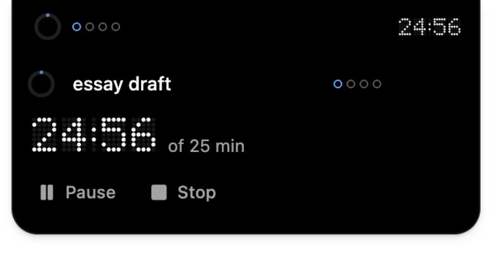
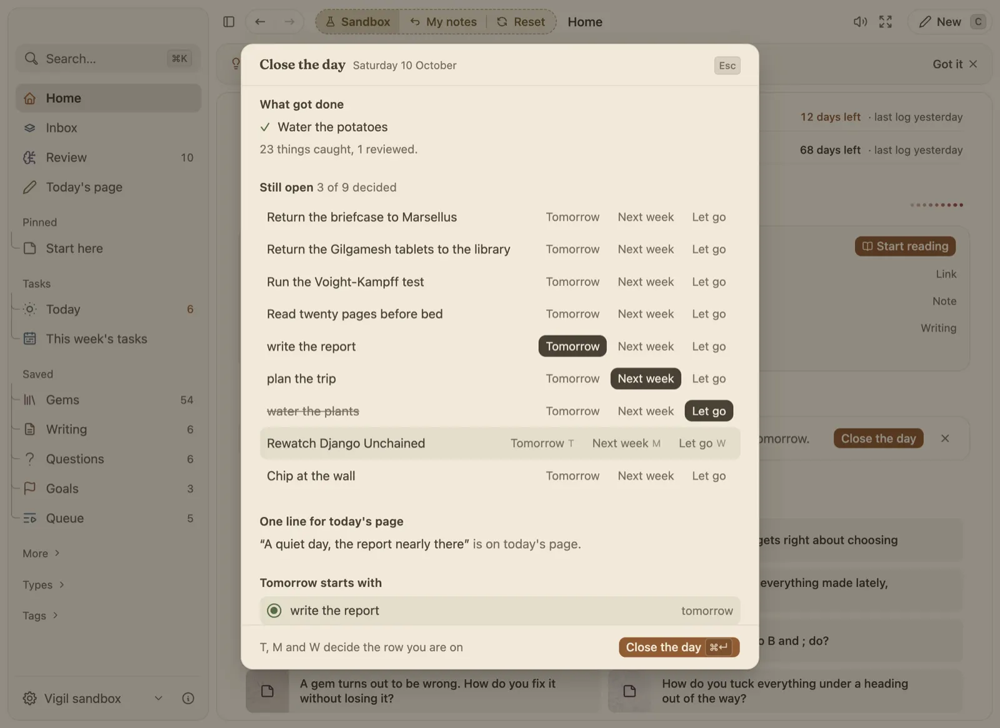

One task, one timer, then the day is done.
Start a session on a task and a small timer floats over your screen until you are done. In the evening, a short look back closes the day.

How it works
- Rounds in plain words. Type 4x25 in quick capture for four 25 minute rounds with short breaks and a long one after the fourth.
- Plan the hours you have. Write ~30m or ~1h on a task, and Today puts the hours planned beside the hours left in your day.
- Close the day. Each evening: what got done, each open task sent to tomorrow, next week or let go, a line for today's page and the one task to start tomorrow with.
